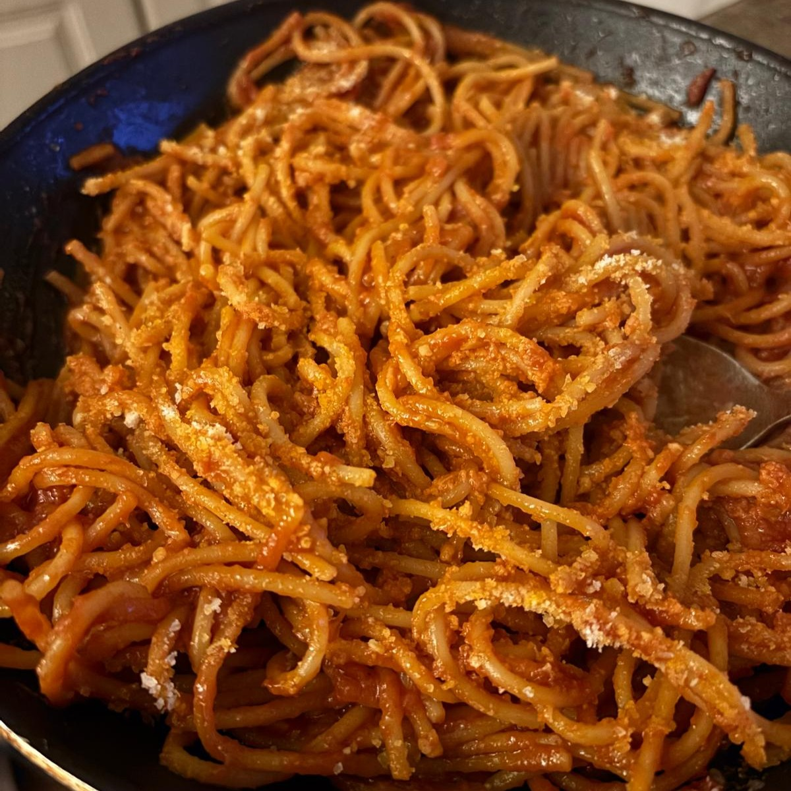

Tomato Spaghettis

Spaghetti shaped tomatoes
Who needs water boiling when you have a big pan ?
Crispy, tender and giving the tomatoes in their heart. That's what these spaghettis are.
Ingredients
- 200gr of Spghetti (thick ones)
- 3 coffee spoon of tomato paste
- 1 garlic clove
- 200gr of tomato pulp
- 50gr of parmiggiano
- 150ml of water
- Olive oil
Steps
- Mix the tomato paste, tomato pulp and water in a saucepan on medium-low heat.
- slice the garlic and put it in a big pan on medium heat with almost all the olive oil
- Add 2 ladles of tomato sauce and put the spaghetti directly on the pan. Fry for 7/8min.
- Trun the pastas around, add one more ladl of sauce and wait for another 7/8min
- Add gradually more tomato sauce while stirring the spaghettis for another 20/30min until they are cooked
- Add the parmesan
- Done !
Home